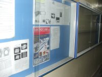
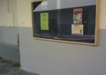

|
TurkCADCAM.net
Dergisi Okur Görüþleri
|
|
29-04-2006
Derginizi
cok begendim. Bence Turkiye'nin cok ihtiyaci olan bir
dergi. Ozellikle yazilarda reklamvari anlatimdan ziyade
detayli bilgi aktarimi olmasi hosuma gitti. Diger
bazi tasarim dergilerine oranla daha yararli icerigi
olduguna inaniyorum.
Ayrica
yurt disindan Turk tasarim firmalari hakkinda bilgi
almak bana sahsen cok faydali oldu.
Basarilarinizin
devamini diliyorum...
Zeynep Falay
Endüstri Ürünleri Tasarimcisi
Concept Designer
Helsinki,
Finlandiya
|
|
17-04-2006
Dergi
ülkemizdeki büyük bir boþluðu doldurmaktadýr; Çeþitli
sektörlerdeki CAD/CAM/CAE/RP uygulamalarýný göstererek
okuyucularýnýn vizyonunu geliþtirmekte ve misyonunu
baþarýlý bir þekilde göstermektedir.
Ozan ONGUN
Mekanik Tasarým Elemaný
VÝKO
Elektrik ve Elektronik End. San. ve Tic. A.Þ.
|
|
23-03-2006
Derginizi
inceledim. Gerçekten çok baþarýlý bir dergi olmuþ. Sektörle
ilgili bir çok önemli konuya deðinilmiþ. Dergi, içeriði
ve kurgusu açýsýndan okunabilir ve yararlanabilir bir
çalýþma olmuþ. Emeði geçen herkesi candan kutluyorum.
Mustafa
Manavoðlu
Ürün Geliþtirme Müdürü
Eczacýbaþý
Yapý Gereçleri
|
|
10.03.2006
Dergi'nizin de Portal'iniz gibi, Türkiye'de gerek yeni
teknolojilerin taninmasi ve gerek ürün gelistirmenin
gelismis ülkeler seviyesinde yapilmasi hedefinde önemli
rollerden birini üstlendigi görüsündeyim.
Yayin hayatinizda basarilarinizin devamini dilerim.
Cenk
Sinirlioglu
Head of materials and technology
Concept Laser GmbH, Almanya
|
|
08.03.2006
Öðrencilerimin
CAM konusunda izlemesini tavsiye edeceðim ender bir
dergi. Geliþmeleri takip edip paylaþabileceðim bir yayýn.
Ülkemizdeki sektörlerde CAD/CAM konusunda neler olduðunu
izletebileceðimiz ortak bir platform. Emek ve katký
verenlere teþekkür ederim.
Öðr.Gör. Yusuf KAPLAN
Akdeniz Üniversitesi / Teknik Bilimler Meslek Yüksekokulu
/ Makine Programý
|
08.03.2006
Dergi'yi cok begendim. Sektorun boyle bir ihtiyaci vardi.
Uzun soluklu olmasini diliyorum.
Ilkay Baskan
Viko Elektronik / Urun Geliþtirme Bol. |
| 06.03.2006
Dergi'niz için sizi kutlamak isterim, baþarýlý bir çalýþma
olmuþ. Umarým yayýnýnýz uzun süre devam eder. Çünkü
Türkiye'de böyle bir yayýnýn eksikliði bulunuyordu.
Çalýþmalarýnýzda baþarýlar dileðiyle...
Refik
Tiniþ
www.refiktinis.com
|
|
04.03.2006
Baþarýlý buluyorum, bizlere güzel þeyler kazandýracaðýndan
þüphe yok. Verilen tüm emeklere þimdiden teþekkürü bir
borç biliriz.
Murat
Emen
Endüstriyel Tasarýmcý
Saloni Modern Koltuk
|
|
04.03.2006
Ýçerik
bakýmýndan gayet iyi olmuþ. Tebrik ederiz.
Yalçýn
Ustaoðlu
Planet
Plastik Metal
|
03.03.2006
Tasarým konusunda olan geliþmelerden haberdar olmak için
güzel bir kaynak...
Serap Iþýklý
CAD/CAM ve Metod Mühendisi
Ditaþ A.Þ. |
01.03.2006
Ýlk sayýnýzý okudum; Söylenebilecek çok þey var ama en
önemlisi, büyük bir boþluðu dolduruyorsunuz; Teþekkür
ederim.
Coþkun Özaþçýlar
Uçak Müh.
TUSAÞ Havacýlýk ve Uzay Sanayi A.Þ. |
24.02.2006
Mukemmel hatta ve hatta mükemmelin de fevkýnde bir dergi.
Muvaffakiyetler diliyorum...
Murat AYNA
Patent Uzmaný
DESTEK PATENT A.Þ |
|
24.02.2006
TÜM EMEGÝ GEÇENLERE BÝLÝMSEL KATKILARI ÝÇÝN TEÞEKKÜR
EDERÝM.TEKNOLOJÝ ALANINDAKÝ KATILIMLARIN DEVAMINI DÝLERÝM.
EMEGÝ GEÇEN HERKESE TEÞEKKÜRLER.
ALÝ TURGUT
TEKNÝK RESÝM KISIM ÞEFÝ
ASKAM KAMYON ÝMALAT VE TÝC. A.Þ.
|
|
23.02.2006
Sektördeki büyük bir açýk noktayý kapattýðýnýzý düþünüyorum.
Gökalp
UYSAL
Coþkunöz A.Þ.
|
|
23.02.2006
Yeni olmasýna raðmen oldukça iyi.
Dr. Recep Yiðit
DEÜ ÝZMÝR MESLEK YÜKSEKOKULU OTOMOTÝV BÖL.
|
|
22.02.2006
Yýllardýr bekliyordum; Nihayet baþardýnýz. Tebrikler,
teþekkürler...
Derginizi
bir solukta okurken üniversitelerin (birkaçý dýþýnda)
dolayýsýyla bizlerin neden endüstrinin çok gerisinde
kaldýðýný düþündüm. Sanýrým nedeni 08:00-17:00 mesai
kavramý ve zihnimizdeki "bukadarý bana yeter"
saplantýsý. Yetmemeli. Herþey hýzla geliþiyor. Alternatifleri
yapýlýyor. Üretimin de her aþamasýna 01' ler hakim oluyor.
Derginiz ve web siteniz çok önemli bir boþluðu doldurdu.
Umarým devam eder.
Öðr.
Gör. Yaþar BALBAÞI
Akdeniz Üniversitesi Teknik Bilimler MYO / Makine Böl.
|
|
22.02.2006
Ýlk sayý çok güzeldi. Derginin uzun ve baþarý dolu bir
ömrünün olmasýný dilerim.
Mahmut
Selami Korkmaz
Uçak Müh.
Ýstanbul
Ulaþým A.Þ.
|
| 22.02.2006
Öncelikle
böyle bir dergi çýkarttýðýnýz için çok teþekkür ederiz,
gerçekten çok güzel bir dergi... Ayrýca web sitenizi
de uzun süredir takip ediyorum ve bir çok öðrencime
de sitenize üye olmasýný öneriyorum.
Dergi
çýktýktan sonra da ilk fýrsatta önce kendim abone oldum
daha sonra da öðrencileri dergi aboneliðine
yönlendirmeye çalýþýyorum. Dergi ve abonelik þartlarýný
tanýtan ilanlar þu an panolarýmýzda...
Güzel
yapýlan her þey bence takdir ve teþvik edilmeli.. Gerçekten
cýva gibi gençler geliyor, gençlerin mesleki geliþimine
yardýmcý olabilmek için ne yapsak az...
Yrd.Doç.Dr. Vedat TAÞKIN
Makina Mühendisliði Bölüm Baþkan Yardýmcýsý
Trakya Üniversitesi
|
| 15.02.2006
Ýlk
sayýda;
En beðendiðim röportaj: Mirzat Koç ile yapýlan söyleþi
En beðendiðim makale: Kuyumculuk Sektöründe Kalýp
Demo CD'de en çok beðendiðim içerik; Eðitim Dökümanlarý-Silikon
Kalýplama
Dergi genel olarak bence sektörde önemli bir açýðý kapattý.
Çok baþarýlý buldum. Umarým çok uzun soluklu olur. (Bir
zamanlar CAD+ adýnda bir dergi vardý ama ne yazýk ki
çok uzun sürdüremediler).
Özgür
Kilit
Öðretim Görevlisi
E.Ü. Makina Müh. Böl.
|
| 14.02.2006
Ýlk
sayýda;
En beðendiðim röportaj: Mirzat Koç, Endüstriyel Tasarýmcý,
IDEOLOG
En beðendiðim makaleler:
Sayfa 65 (GÖVDE SIZDIRMAZLIK ELEMANI TASARIMINDA SONLU
ELEMANLAR ANALÝZÝ)
Sayfa 28 (Kuyumculuk Sektöründe Kalýp Artýk 3D Printer
makineleriyle üretiliyor)
Sayfa 8 (Bilgisayar Destekli Tasarým ve Ýmalat (CAD/CAM)
Nasýl Baþladý ve Geliþti?)
Demo CD'de en çok beðendiðim içerik: Eðitim Dökümanlarý,
yeni ürün tanýtýmlarý.
Ahmet ORHAN
Müh. Böl / Ürün Geliþtirme
MGI COUTIER A.Þ.
|
|
13.02.2006
Derginizi
cumartesi gunu aldim ve okudum, CD'yi inceledim. Hotroad
araba -dizayni ve yapýmý ile ilgili olan 12 dak. film
ilgi cekiciydi.. Derginizin, benim gibi bu konuda egitimi
olmayan bir kisiyi bile cezbediyorsa, sektorde calisanlar
ve ureticiler icin cok sey ifade edecegini dusunuyorum..
Soylesileri satir satir okudum, resimleri inceledim...
Emegi gecen herkesi kutlarim.
D.
Ozge KINKIT
Baskent
Patent
|
| 07.02.2006
Ýlk
sayýsýný çok beðendik. Çalýþmalarýnýzda baþarýlar dilerim.
Levent
Garip
Ar-Ge Müh.
Canel
Otomotiv A.S.
|
05.02.2006
Dergi'yi uzun uzun inceledim, gercekten cok faydali dokumanlar
var ve biz genc muhendislere yeni ufuklar acacak bir sayi
olmus. Ulkemizde tasarim ve urun gelistirme yeni yeni
hakettigi yeri almaya baslamistir ve emin olunki bu yeni
olusumda bu Dergi'nin cok katkisi var...
Onur
YILDIRIM
KALITE KONTROL / TASARIM
GUNDOGAN MEDIKAL LTD.STI
|
| 02.02.2006
Dergi
çok baþarýlý oldu. Gezdiðim firmalarýn birçoðunda karþýlaþtým...
Kaan
Kýraç
Endüstri Müh.
Tekno
Ticaret
|
| 01.02.2006
Öncelikle,
derginizin sektörde bu yöndeki boþluðu dolduracaðýna
inanýyorum. Seçilen konu ve ropartaj yapýlan kiþilerle,
yazýlarýn içerikleri gayet doyurucu ve billendirici.
Genel görünüm ve sunum da gayet profesyonelce yapýlmýþ.
Emeði
geçen herkese teþekkürlerimi sunarým. Umarým bu yol
uzun soluklu olur.
Levent
YAÐMUR
Makine Y. Müh.
TÜBÝTAK
UME
|
| 23.01.2006
...
Derginizin içeriði çok doluydu. Tebrik ederim...
Doç.
Dr. Özlem Er
ÝTÜ
Endüstri Ürünleri Tasarmý Böl.
|
| 06.01.2006
Ellerinize,
kaleminize, beyninize saðlýk. Harika olmuþ. Açýkçasý
bu kaliteyi beklemiyordum... Tüm emeði geçenlere takdir
ve saygýlarýmý sunuyorum.
Sami Özbay
Makine Müh.
Ford
Otosan
|
| 06.01.2006
Dergi
ile ilgili görüþlerimi sizlerle de paylaþmak istedim;
Ben Dergi'nin içeriðinin yanýnda, kaðýt, baský ve dizayn
kalitesini de çok beðendim. Tüm emeði geçenlerin ellerine
saðlýk...
Ozhan
Türer
Mak. Müh.
Saglam
Metal A.Þ.
|
05.01.2006
Gerçi
birçok arkadaþ Dergi'nin ilk sayýsýyla ilgili zaten
takdirlerini dile getirdi... Ancak ben de yapýlan çalýþmanýn
karþýsýnda birþeyler yazmadan duramadým; Ellerinize
saðlýk, gerçekten de hoþ ve yararlý bir dergi olmuþ..
Bir
sonraki sayýlarda da baþarýlarýnýzýn devamýný temenni
ederim...
Hakan
Cengiz
Makine Müh.
Cadem
A.Þ.
|
|
03.01.2006
Dergi'nizin
ilk sayýsý elime ulaþtý. Gayet güzel bir dergi olmuþ.
Tebrik ediyorum. Ellerinize saðlýk.
Baþarýlarýnýzýn devamýný dilerim.
Akgün
FIRAT
Ýnova
Makina
|
|
02.01.2006
Dergi'yi inceledim ve cok basarili bir yayin oldugunu
belirtmek isterim.
Saygilarimla
Onur
Ozgen
CFD Application and R&D Engineer
Layne Bowler Pumps Co.
|
|
31.12.2005
TurkCADCAM.net
Dergisi'nin ilk sayýsý elimize ulaþtý. Dergi'nin içeriði,
bilgi ve bilgiye ulaþmadaki kolaylýk bakýmýndan takdir
edilecek titizlik ile hazýrlanmýþ. Bu deðerli çalýþmalarýnýz
için þahsen bir teþekkür iletmeyi kendime görev bildim.
Hayat boyu baþarýlar...
Volkan
Þahin
Baykan Otogaz San. Tic. A.Þ.
|
|
30.12.2005
Dergi
tarafýma ulaþtý. Oldukça kaliteli ve benzersiz bir içerik.
Layýk olduðu tiraj ve beðeniyi en kýsa zamanda toplayacaðýný
görmekteyim. Tek kelime ile þaheser. Tebrik ediyorum.
Özellikle TurkCADCAM Grubu'ndan alýnmýþ olan yazýþmalar
virgülüne bile dokunmadan yayýnlanmasý memnuniyet verici.
Belki bu vesile ile her ayýn en ilgi çeken tartýþma
ve paylaþýmlarý dergide yayýnlayarak insanlara bilgiyi
paylaþmanýn önemini/deðerini göstermiþ olursunuz...
Baþarýlarýnýzýn
devamýný dilerim.
Ertan
SARIBAYRAKDAROÐLU
Tasarým Teknisyeni
Ürün Geliþtirme, ARÇELÝK A.Þ.
|
07-04-2006
Öncelikle bu yayýnda emeði geçen tüm arkadaþlarý tebrik
etmek istiyorum. Gerçekten ihtiyacý karþýlayan bir yayýn.
CAD/CAM konusunda tanýtýcý ve eðitici özelliðe sahip.
Yayýnlarýnýzýn devamýný dilerim.
Ahmet
TÜM
Makine Teknik Öðretmeni
Metod Sorumlusu
INDEC End.Renk Üretimi ve Boyama Sistemleri Ltd.Þti.
|
|
16-03-2006
Bu girisimcilik ve paylasimcilik sayesinde simdi ulkemizdeki
tum teknik arkadaslar ile goruslerimizi paylasabiliyor,
soru sorabiliyor, karsiliginda ise inanilmaz bir destek
gorunce hem cok sasiriyor hem de cok memnun oluyoruz.
Asla
vazgecmeyip istikrarli bir sekilde ortaya guzel birseyler
cikardiginiz ve meslegimize kattiginiz degerler icin
tum emegi gecenleri tebrik ederim.
Ismail Karaca
Karaca Makina
|
|
12.03.2006
Derginizi
çok beðendim, CAD/CAM alanýyla uðraþanlara çok yardýmcý
olacak nitelikte. Size ve ekibinize teþekkürler.
M.
Mustafa CEYLAN
Ç.Ü. Makine Müh. 4. Sýnýf Öðrencisi
|
10.03.2006
Dergi'nin ilk sayýsýný zevkle okudum. Sonraki sayýlarý
merakla bekliyorum. Bir dergide olmasý gereken bilgilerden
çok daha fazlasý var. Ders kitabý gibi öðretici. Hem teorik
hem pratik. Diðer sayýlarýn da bu düzende olmasý dileðiyle...
Yapýlan akademik indirimli kampanya için de ayrýca teþekkür
ederim.
Mehmet
AVCI
Makine Mühendisliði Öðrencisi
|
|
10.03.2006
Çok
faydalanýyorum. Esas hoþuma giden bazý teknik olaylarýn
nasýl olmasý gerektigini gerçek olarak göstermesi..
ÝBRAHÝM
BOZKURT
MAKÝNA TEKNÝKERÝ
ÝSTANBUL ULAÞIM A.Þ.
|
|
09.03.2006
Makine mühendisliði bölümüne baþladýðýmdan beri fuar
ve dergileri takip etmekteydim. Ama ilk yýllarda dergilerde
biz öðrencilere yönelik bilgilendirici, öðretici makaleler
olmadýðýný gördüm. Bu yüzden alanýmla ilgili pek dergi
alamamýþýmdýr. Ta ki TurkCADCAM Grubu ile tanýþana dek.
Grup çok aktif ve profesyonel bir kitleye hitap ediyordu.
Ben de yararlanýyordum...
Dergi'de
bazen tecrübelerle dolu yazýlarla karþýlaþtým bazen
de sýfýrdan bir ürünün tasarýmý ile. Biz makine mühendisi
öðrencilerine de bu tarzda bilgiler gerekiyor zaten.
Açýkcasý tasarým konusunda bakýþ açým biraz daha þekillendi.
Birçok roportajda genç mühendislere tavsiyelerinin sorulmasý
gerçekten çok iyi olmuþ diye düþünüyorum. Dergi ile
gelen CD'lerdeki içerik de çok özenle hazýrlanmýþ. Devamýnýn
gelmesini bekliyorum. Tüm emeði geçenlere teþekkür ediyorum...
Not:
Gerekli ilanlarý çýktý alýp fakülte panomuza da astýk.
Umarým daha da büyürsünüz (31-03-2006).
Mehmet
Emre Baþ
Uludað Üniversitesi Makina Topluluðu
www.umakit.net
|
|
08.03.2006
Dergi'yi hazýrlayan ekibi tebrik ediyorum. Çok baþarýlý
bir çalýþma olmuþ, sektörümüze hayýrlý olmasý dileðiyle
(ilk sayýnýzda olduðu gibi reklamdan uzak, bilgiyle
dolu yayýnlarla bekliyoruz yeni sayýnýzý).
Ali
Ekber TALAN
Teknik Öðretmen
UMAR
MAKÝNA A.Þ.
|
|
07.03.2006
Ýlk sayýsýný incelediðim derginiz oldukça güzel bilgiler
içeriyor. Reklam sayfalarýnýn da az olmasý beni oldukça
memnun etti. Böyle bir yayýný ülkemize kazandýran ekibe
çok teþekkürler.
BURHAN
ÖZUÐUR
GAZÝ ÜNÝV. F.B.E. MAKÝNE EÐÝTÝMÝ BÖL. YÜKSEK LÝSANS
ÖÐR.
|
|
06.03.2006
Derginiz sayesinde tasarým ve üretimdeki bir çok geliþmeden
haberdar oldum. Yayýn hayatýnýzda baþarýlarýnýzýn devamýný
diler, teþekkür ederim.
Yetkin
Hamuriþçi
Dokuz Eylül Üniv. Makine Müh. Böl. Öðr.
|
05.03.2006
ÝYÝ VE ÝNANIYORUM KÝ DAHA DA ÝYÝ OLACAK...
Erkan TÜRKKAN
Teknik Öðretmen
Soma Teknik Lise ve End. Meslek Lisesi |
04.03.2006
Ýlgi duyduðum imalat ve bilgisayar destekli tasarým konularýnda
bana çok þey katacaðýný düþündüðüm, güzel hazýrlanmýþ
bir yayýn, teþekkürler.
ATALAY TAYFUN TÜREDÝ
ÇUKUROVA ÜNÝV. MAKÝNE MÜH. BÖL. ÖÐR. |
01.03.2006
Alaným hakkýnda hazýrlanmýþ en iyi bir dergi. Okulda bana
çok yardýmcý olacaðýný, beni geliþen CAD/CAM yazýlýmlarý
hakkýnda bilgilendireceðine inanýyorum...
Yusuf SERT |
28.02.2006
DERGÝ VE PORTALINIZIN ÇOK FAYDASINI GÖRÜYORUM...
Selçuk Çavunt
Öðretmen
TASEV AYAKKABI ANADOLU MESLEK LÝSESÝ / AYAKKABICILIK BÖL. |
|
28.02.2006
Ýlk
sayýnýzý inceledim ve çok beðendim, bu dalda farklý
olduðunuzu, farklý düþündüðünüzü anladým.
FURKAN BÝLGÝÇ
BALIKESÝR ÜNÝV. MAKÝNE MÜH. BÖL. ÖÐR.
|
27.02.2006
Sektörün ihtiyacý olan çok iyi bir dergi olduðunu dusunuyorum.
Dokuz Eylül Üniv. Makine Müh. Böl. Öðr. |
|
27.02.2006
Ýlk sayýnýz içerik, anlatým ve zenginlik yönü ile çok
iyiydi. Tasarým konusunda da çok baþarýlý.
SATI
MUTLU
ÝTÜ
Makine Fakültesi Konstrüksiyon A.B.D. Yüksek Lisans
Öðr.
|
27.02.2006
Konusunda en kapsamlý kaynak olarak görüyorum.
Bedri Nur Alat
Atatürk Endüstri Meslek Lisesi Bilgisayar Destekli Endüstriyel
Modelleme Böl. Öðr. |
|
26.02.2006
Ufkumu açýyor...
Sinan
AKALIN
Sakarya Üniv. Makine Müh. Böl. Öðr.
|
25.02.2006
Türkiye'nin mekanik ve sanayi bakýmýndan dýþa baðlý olduðunu
herkes biliyor. Bu, diðer meslektaþlarýmýzla iletiþimi
saðlayarak dýþa baðýmlýlýðýmýzdan bizi kurtarmaya yardýmcý
olacak bir dergi...
HALÝL YAMAN
MAKÝNA TEKNÝKERÝ |
25.02.2006
Ýlk sayýnýzý çok büyük keyifle ve ilgiyle okudum. Baþarýlarýnýzýn
devamýný dilerim.
Cemil KARASAÇ
Süleyman Demirel Üniv. Makine Müh. Böl. |
23.02.2006
Mesleki anlamda güzel ve ilgi çekici, bilgilendirici bir
dergi. "CAD desinger" olarak da gorev yaptýðýmdan
ilgi alanýma giren bir dergi. Sürekli geliþtirmek, Dergi'nizin
popüleritesini arttýracaðýndan okuyucu sayýsý da artacaktýr.
Baþarýlarýnýzýn devamýný dilerim..
Turgut Aydýn
Sakarya Üniv. Makine Müh. Böl. Öðr. |
23.02.2006
Dergi'nizi ve Portalý'nýzý beðenerek takip ediyorum. Gerçekten
geleceðin Türkiye'si için çok faydalý çalýþmalarýnýz var.
Devamýný dilerim (özellikle yaptýðýnýz röportajlarda öðrencilerin
yararýna olacak sorular sormanýz çok güzel bir uygulama)
Recep Koca
Yildiz Teknik Üniv. Makine Müh. Böl. Öðr. |
|
22.02.2006
Ýlk sayýsýný okurken çok heyecanlandým. CAD/CAM bu sektörde
uzun zamandýr yer almasýna raðmen, içeriði zengin ve
öðretici bir dergi ilk defa yayýnlandý. Okul kitaplarýndan
sonra yardýmcý kaynak olarak ilk aklýma gelen dergi.
Emeði geçen herkese çok teþekkürler. Ýyi çalýþmalar.
Mehmet Avcý
Sakarya Üniv. Makine Müh. Böl. Öðr.
|
|
15.02.2006
Derginizde þurasý güzel burasý güzel diye bir yorum
yapamadým. Kusuruma bakmayýn. Çünki hepsi harika araþtýrmalar.
Ýlk sayýnýzý 6 kere okudum. Sektörel olarak çok iyi
deðerlendirmeleriniz var. Sizi gönülden kutluyorum.
Nadir Ali ÖZGÜN
|
|
14.02.2006
Ýlk sayýda en beðendiðim makale: Patentlerle ilgili
þok edici anýlarým (Tamer Özel)
Emeði
geçen herkese teþekkürler ediyorum. Kadronuz çok iyi
güzel iþler baþarýlacaðýna eminim...
Yavuz Cebeci
|
| 13.02.2006
Ellerinize
saglik mukemmel bir eser yapmissiniz. Uye sayimizin
hizla cogaldi su gunlerde ne kadar cok
kisiyi aydinlatabilirsek okadar iyidir cunku bu ulke
bizim, yarinlarimiz icin calistigimiz genclerimize-cocuklarimiza
aydinlik bir gelecek birakmamiz gerekiyor. Zevk alarak
okuyorum-okutuyorum-uye yapmaya calisiyorum.
Emegi gecen-gecmeyen herkese tesekkurler
Hasan
Yalcin
|
| 13.02.2006
Gerçekten
çok yararlý bi dergi çýkartýlmýþ. Bunun faydalý þekilde
devamýný en içten duygularýmla beklerim..
Burak Elmas
|
| 10.02.2006
Bir arkadaþýmda TurkCADCAM.net Dergisinin ilk sayýsýný
gödüm ve inceledim, gerçekçen mükemmel bir dergi...
Ýsmail IÞIK
Tekn. Öðrt.
|
| 08.02.2006
Oldukca
profesyonel, güzel bir dergi ortaya cikarmissiniz, cok
emek harcandigi belli, tebrikler, tesekkürler...
Muharrem Cakmak
|
| 07.02.2006
CD
içeriðindeki Dergi'ye ek dökümanlar bölümü ve eðitim
dökümanlarý bölümündeki "Örnek ürün geliþtirme
çalýþmasý" gerçek hayattan örnekler sunduðu için
çok yararlý, kesinlikle insanýn ufkunu geniþletiyor.
Silikon
kalýplama, vakum döküm eðitimi de gerçekten çok etkileyici.
Bu tip alýþýlmadýk imalat yöntemlerine gerçekte ulaþmamýz
çok zor. Bu tip örneklerin artmasýný dilerim.
Serkan
ÇÝÇEK
|
| 04.02.2006
Öncelikle
dergi içeriði doyurucu olmuþ. Demo CD içeriði gerçekten
iyi seçilmiþ. Ben öðrenci olduðum için bir ürünün üretim
proseslerine çok ilgi duyuyorum. CD'de birçok çalýþmanýn
nasýl yapýldýðý video ve dökümanlarla desteklenmiþ.
Gerçekten tebrikler...
Makaleler hakkýnda deðerlendirmemi dergiyi okumayý bitirdiðimde
açýklayacaðým. Henüz bugün yarýsýný okluyabildim...
emek veren herkes bir teþekkükürü hak ediyor. Teþekkürler...
Mehmet Emre Baþ
Makina Mühendisliði
ULUDAÐ ÜNÝVERSÝTESÝ
|
31.01.2006
TurkCADCAM.net Dergisi'nin olusumunda tum emegi gecenlere
buradan tesekkurlerimi sunuyor ve muvaffakiyetler diliyorum.
Dergi ile ilgili bir onerim var; Bu onerim CAD programlari
satisini yapan firmalari da ilgilendirmektedir;
Bildiginiz uzere Dergi ile birlikte T-FLEX adinda (adini
yeni duydugumuz) bir CAD programinin ogrenci versiyonu
ucretsiz olarak dagitildi. Ucretsiz dagitilan bu tam surum
ile programi tanimak nasip oldu. Ozellikle farkli calisma
mantigi, hizli modelleme ve bir cok farkli ozelligi ile
beni etkiledigini itiraf edebilirim...
Bu
tur calismalarin veya tanitim amacli ogrenci versiyonu
dagitimlarinin diger CAD program satici firmalari tarafindan
da yapilmasini siddetle tavsiye ediyorum. Cunku bu vesile
ile programlarin birbirine olan ustun ozellikleri ortaya
cikmakta ve ozellikle maliyet unsurlari goz onunde tutulabilmektedir...
Diger bir onerim; Internetten odeme imkani olusturularak
TurkCADCAM.net Dergisi'ne abonelik islemleri kolaylastirilabilir.
Salih EMIN
Teknik Ressam
|
| 14.01.2006
Bu
grubun üyesi olmaktan gurur duydum; TurkCADCAM.net Dergisi
Ocak - Þubat 2006 Sayýsý'na sahibim ve çalýþmalar kývýlcým
saçýcý tarzdan...
Vizyonunuzu çok doðru buluyorum. Sayýlý baþarýlý teknik
dergilerdensiniz. Gurur duymalýsýnýz. Ýlk sayýda en
çok Mirzat Koç röportajý hoþuma gitti. Bu röportajdan
çok þey öðrendim. Ýkinci olarak ta Numarine harikaydý.
Diðer sayýlarýnýzý dört gözle bekliyorum!
Mehmet
KANIK
Sakarya
Üniversitesi / Metalurji ve Malzeme Müh. Böl.
|
03.01.2006
Gercekten cok iyi bir dergi hazirlanmis; Dergi'ye emegi
gecen herkese tesekkurler. Umarim bu kalite sonraki sayilarda
da devam eder...
Mehmet
Demirezen
Makine Yuk. Muh.
|
| 03.01.2006
Dergi
cikarip yayilma dusuncesi hep hayalimdi ve bunu sizler
gerceklestirdiniz. Dergi'nin ilk sayisi elimde; Harika
olmus. Okumaya doyamiyorum...
Berfin
Seydan
|
| 02.01.2006
TurkCADCAM.net
Dergisi'nin ilk sayisini gordum; Tek kelimeyle mukemmel.
Bu harika calisma icin tesekkurler.
Metin
Mehel
|
25.12.2005
Dergi'nin henüz baþ kýsýmlarýný okudum; Ýçeriði mükkemmel
birþey olmuþ. Özellikle ürün geliþtirme projeleri epey
yer tutmuþ...
Ýsmail Demir |